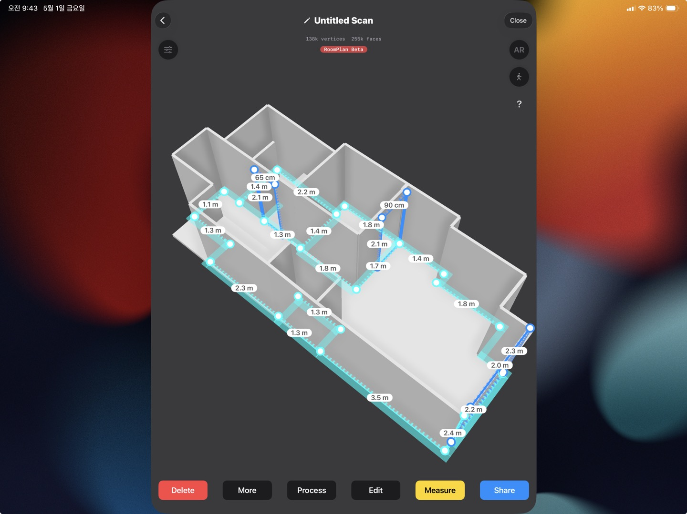
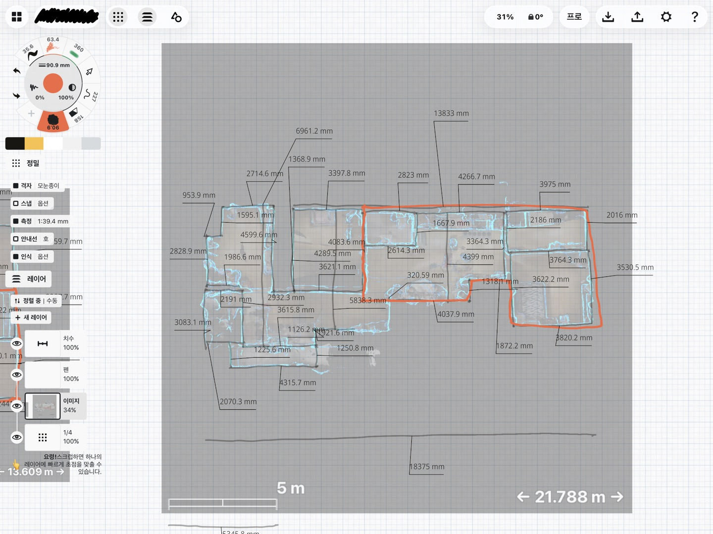
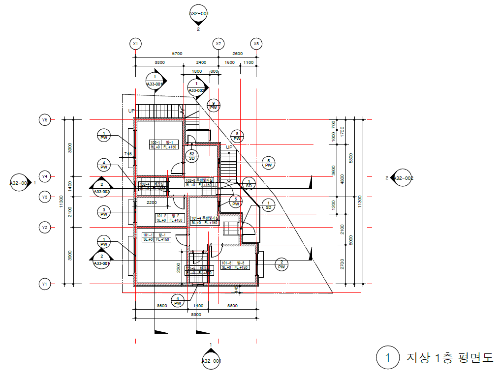
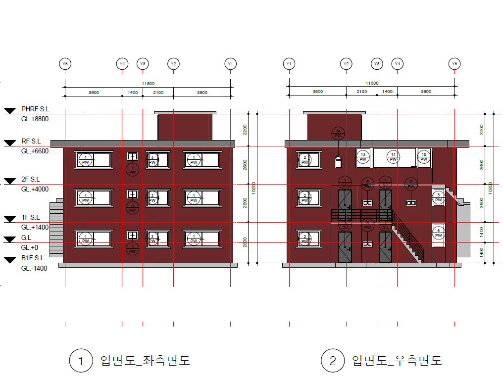
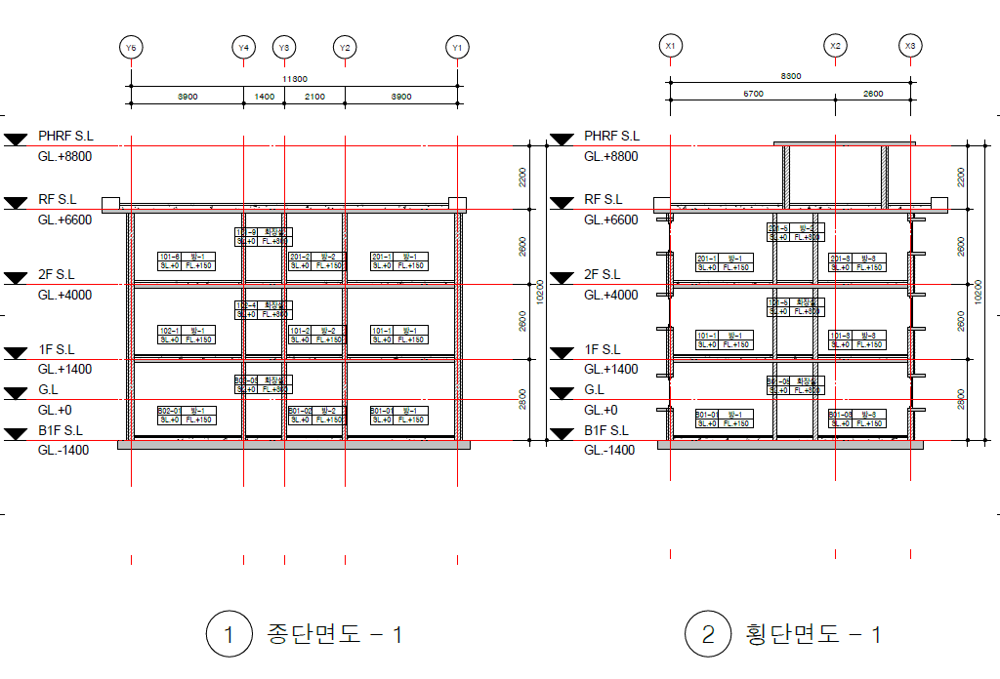

비동의자를 적으로 만들지 않습니다
참여하지 않는 주민에게 당장 돈을 내거나 집을 비우라고 요구하지 않습니다. 먼저 참여한 주민의 개선 효과를 보고 나중에 참여할 수 있게 둡니다.
YUGY DESIGN GROUP은 30년 이상 된 노후 단독주택, 다가구주택, 다세대주택의 현재 상태를 3D Scan으로 실측하고, 수치화하고, BIM 기반 평면도·입면도·단면도로 정리합니다. 그리고 철거가 아닌 거주 중 단계 개선으로 주차, 안전, 공원, 에너지 문제를 함께 풀어가는 거주형 도시재생 오디트를 제안합니다.

자락길이 주민의 여가복지 접근성을 넓힌 사업이었다면, 공공형 Space Auditor는 노후주택 주민이 자기 집을 이해하고 관리할 수 있도록 돕는 민간 건축 서비스 모델입니다.
산으로 가는 길을 열었던 도시가,
이제는 내 집을 이해하는 길을 열 수 있습니다.
많은 노후주택은 실제 거주가 계속되고 있지만, 현재 상태를 확인할 수 있는 도면이 없거나 오래된 자료에 머물러 있습니다. 집수리, 에너지 개선, 건축물대장 현황도면 정비, 향후 유지관리를 위해서는 먼저 집을 읽을 수 있는 기본 자료가 필요합니다.
재개발·재건축이 어려워진 노후 저층 주거지에서, 주민이 계속 거주하면서 주차, 안전, 공원, 골목환경을 단계적으로 개선하는 모델입니다.
전원 동의가 아니라,
선참여자부터 시작하는
도시재생.
기존 재개발·재건축은 동의율, 조합, 소송, 금융비용, 분담금이라는 긴 터널을 통과해야 합니다. YUGY DESIGN GROUP은 동의자와 비동의자를 적으로 나누지 않고, 먼저 참여하려는 주민과 지역 자원을 중심으로 작은 개선부터 시작하는 거주형 도시재생 오디트를 제안합니다. 나가고 싶은 사람의 매도 수요, 남고 싶은 사람의 거주 수요, 동네에 필요한 공공편의시설을 함께 읽어냅니다.
| 기존 재개발 | 동의율 확보, 조합 설립, 이주와 철거, 장기 사업 지연, 분담금 부담이 중심입니다. |
|---|---|
| 거주형 도시재생 | 주민이 계속 살면서 주차, 공원, 방범, 골목환경, 에너지 개선부터 순차적으로 실행합니다. |
| 핵심 차이 | 100가구를 철거 단위로 묶는 것이 아니라, 생활 개선 단위로 묶습니다. |
모든 집을 한 번에 허물지 않아도, 동네의 삶은 바뀔 수 있습니다. 팔고 나가고 싶은 부동산, 방치된 빈집, 부족한 주차공간, 어두운 골목, 작은 자투리땅을 도시재생의 첫 단추로 활용합니다.
참여하지 않는 주민에게 당장 돈을 내거나 집을 비우라고 요구하지 않습니다. 먼저 참여한 주민의 개선 효과를 보고 나중에 참여할 수 있게 둡니다.
동네를 살리고 싶은 주민, 지역 기업, 금융기관, 지자체와 협력할 수 있는 구조를 사전 검토합니다. 자금 모집, 투자 권유, 수익 보장, 보조금 확정 안내는 제공하지 않습니다.
재개발을 기다리며 멈추는 10년이 아니라, 매년 조금씩 주차, 안전, 공원, 에너지 문제를 고치는 10년으로 바꿉니다.
집 한 채의 리스크를 보는 것을 넘어, 동네 단위의 권리, 공간, 예산, 순서, 공공성을 함께 읽는 오디트입니다.
단순한 사진 기록이 아니라, 현장을 수치화하고 도면화하여 주민과 행정이 함께 활용할 수 있는 형태로 정리합니다.
현장에서 공간의 형태, 주요 치수, 방 구성, 벽체 흐름을 확인합니다. 현장 여건에 따라 추가 실측과 사진 기록을 함께 진행합니다.
스캔 자료와 실측 내용을 바탕으로 공간의 크기와 관계를 정리합니다. 막연한 집수리 상담을 수치 기반의 판단으로 옮기는 단계입니다.
BIM 기반으로 평면도, 입면도, 단면도 등 주택관리도면을 작성합니다. 필요 시 담당 지자체의 업무 기준을 확인하여 건축물대장 현황도면 정비 업무에 활용 가능한 자료로 정리합니다.
실제 사업 범위와 제출 방식은 지자체 기준과 대상 주택의 상태에 따라 협의합니다.
아래 이미지는 서비스의 이해를 돕기 위한 예시입니다. 실제 성과물의 범위와 표현 방식은 대상 주택과 사업 기준에 따라 달라질 수 있습니다.




주민에게는 내 집을 이해하는 도면을, 지자체에는 노후주택 관리와 집수리 정책에 활용 가능한 기초자료를 제공합니다.
공공형 Space Auditor와 거주형 도시재생은 도면소생술, 스페이스 오디터, 온라인 모델하우스와 연결되어 더 넓은 주택관리 흐름으로 확장됩니다.
지자체 시범사업 제안 검토, 주민 대상 주택관리도면 구축, 3D Scan 실측 및 BIM 도면화, 100가구 거주형 도시재생 오디트에 대해 문의해 주세요. 사업 범위, 대상 주택, 제출 자료, 보안 기준, 주민 참여 구조는 상담 후 정리합니다.